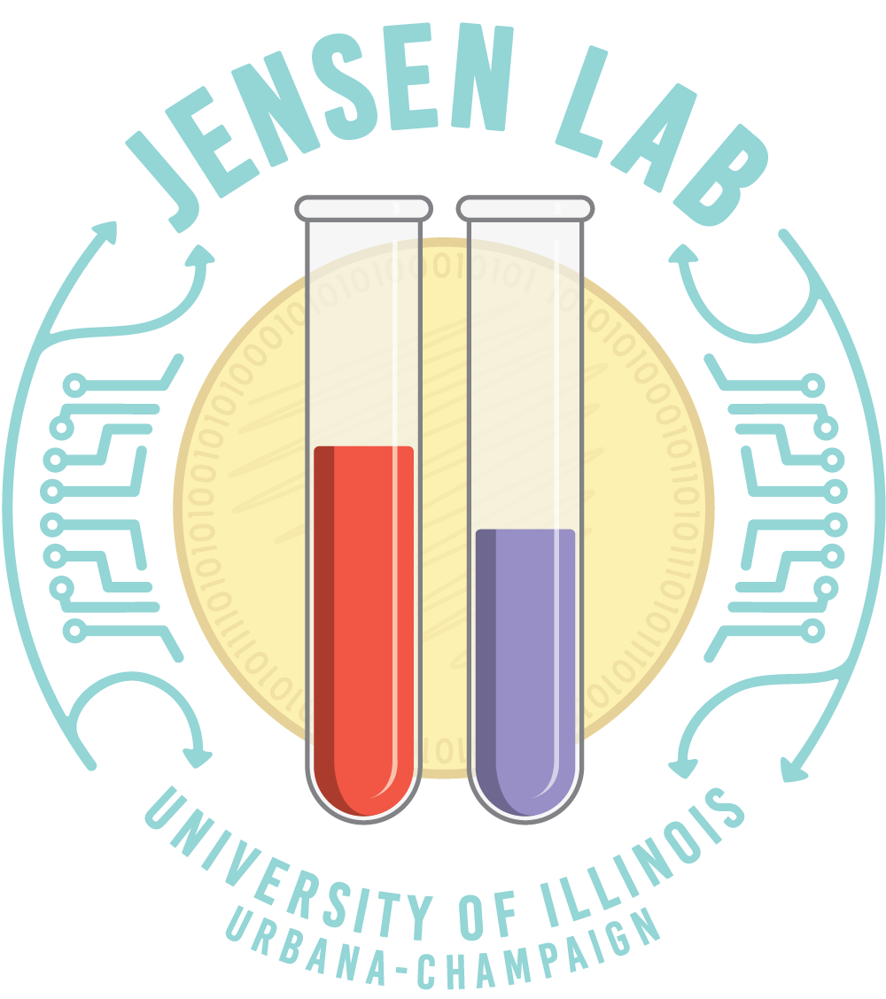

Jensen Lab

I work under the guidance of Dr. Paul Jensen to study how the bacteria S. sobrinus plays a role in cavity formation using computational techniques. My role is to build automated solutions for bacteria transformation experiments by developing computer vision algorithms for colony tracking and designing protocols on an Opentrons pipetting robot to carry out the experimentation.